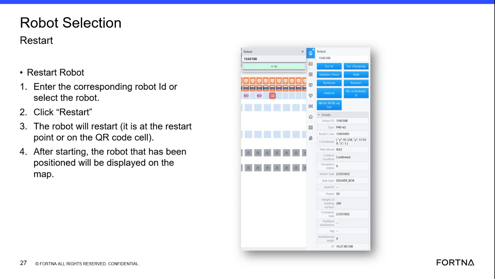

| Procedure ID | proc_remove_a_robot_from_the_robot_selection_tab_v1 |
|---|---|
| Title | Remove a Robot From the Robot Selection Tab |
| Procedure Type | operation |
| Primary Role | operator |
| Support Safe | No |
| Validation Status | needs_sme_review |
| Merge Status | source_finalized |
Use the Robot Selection tab to remove a robot from the system by entering the robot ID or selecting the robot on screen, then clicking Remove and confirming the system reports success. The source also warns that logical removal does not guarantee the robot is no longer physically present on the floor.
Use this procedure when a robot needs to be removed from the system through the Robot Selection tab and the operator has either the robot ID or can identify the robot directly on the screen.
Responsible role: operator
Instruction:
Open the Robot Selection tab.
Expected result:
The Robot Selection tab is visible and ready for robot identification and removal.
Screens / Images:

Stop or Escalate If:
Responsible role: operator
Instruction:
Identify the robot to remove either by entering the corresponding robot ID or by selecting the robot directly on the screen.
Expected result:
The intended robot is selected or identified for removal.
Screens / Images:
Stop or Escalate If:
Responsible role: operator
Instruction:
Click the "Remove" button.
Expected result:
The system processes the robot removal request.
Screens / Images:
Stop or Escalate If:
Responsible role: operator
Instruction:
Check whether the system shows that the removal was successful.
Expected result:
The system displays a success indication for the removal.
Screens / Images:
Stop or Escalate If:
Responsible role: operator
Instruction:
Before treating the removal as complete, verify that the robot is not still physically present on the floor, because the source warns that a robot can be removed logically while still physically present.
Expected result:
The removed robot is not physically present on the floor, or the mismatch is recognized and escalated.
Stop or Escalate If: